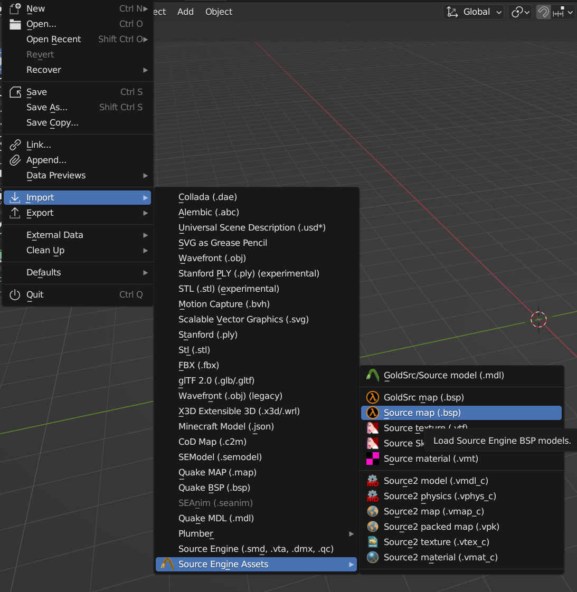
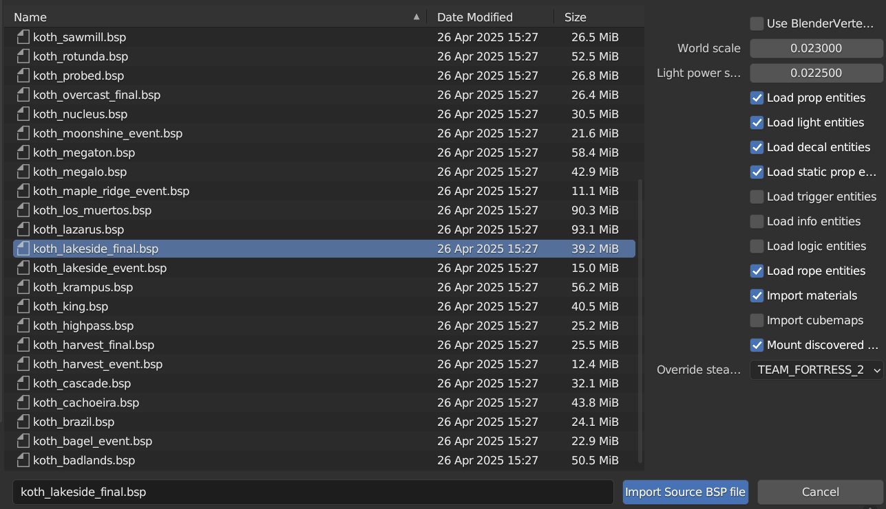
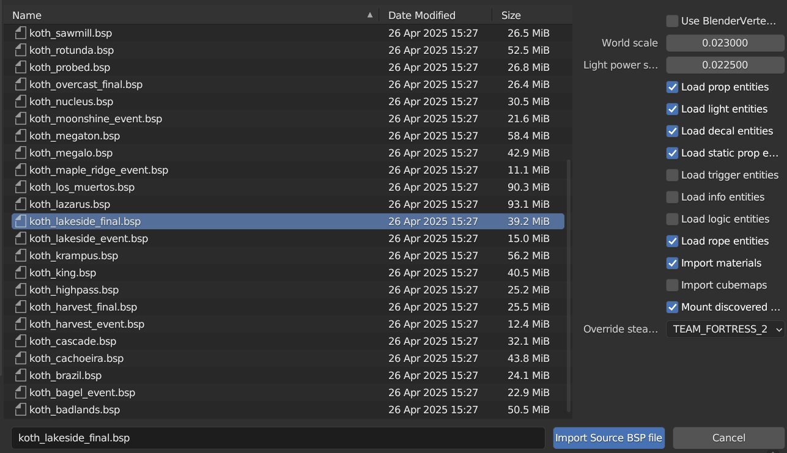

Prerequisites
- Install team fortress 2 if you don't already have it - Install blender, 3.6.9. this is where the majority of porting takes place. basic blender skills are required - Install source.io blender plugin (if you are a TFVR dev, use mano’s custom source.io if you would want TFVR map materials) - Install plumber blender plugin - Install the contractors Modkit (Basic unreal 4 knowledge is also needed) Guide - Install the datasmith export plugin for blender - Enable datasmith import in unreal If you have any questions you can ask us on discord. Step 1: Open blender Step 2: Go to file>import>source engine assets>source map .bsp  Step 3: Set world scale to 0.023 and set light power scale to 0.0225 and allow for rope entities Step 4: find your map to port and hit import source BSP file

Step 4: find your map to port and hit import source BSP file

you can find decompiled maps as such on tf2maps.net
Once it is imported go to brushes and delete the items in these collections/folders, delete all the items in logic, environment, respawn visualizer as well Step 5: set the sky camera scale to 16 Step 6: select all the objects in static props and hit load entities (IMPORTANT DISABLE “USE BVLG”, repeat for props collection) Now you should see your props Step 7: Select your world geo, tab into face edit mode, go to the mesh’s materials tab then find the material skybox and hit select, it should be like this Now right click and hit “delete faces” Step 8: unselect your world geo, then select all your displacements, right click and hit shade smooth, this is so terrain looks smooth Step 9: place your world geo into a collection named “chunks” Now install the scripts folder and make sure only your world geo is selected and go to the scripting tab. Hit the open folder and load splitmeshintochunks script Adjust the size if needed Now hit the play button and wait until all the meshes are split Now select all of your chunks and go to the object and sit origin to geo Step 10: unselect your chunks and now, manually merge your displacements into bigger chunks Step 11: Go to your skybox, go to wireframe mode and select all meshes there, hold shift and select the skybox camera, go to object and hit turn vmf skybox Step 12: Run the fixmodelnames script (and if you have mano’s custom source io, also run his clearmaterials.py) and once that is done select all objects in each collection and export them as udatasmith with selected objects only enabled. Step 13: Open your unreal map hit the datasmith icon One by one import each udatasmith file Hit ok then hit import Now fix any black materials if you are not using mano’s custom map shaders in the master folder (this will require a tad bit of unreal 4 knowledge) (if there are any missing textures or materials such as your skybox, convert your map to vmf using bsprc, side note also enable this. And import into blender using plumber. Make sure you saved your blend file somewhere before you extract textures from the blend) Convert your skybox texture to hdr and make a material like this for your skysphere model Step 14: after you have imported all your datasmith files including your lights, delete any skylights in your level outliner and place your own and set these settings and use the skybox for the cubemap Then show your light map UV’s Increase the overridden light map uv res until it is slightly greenish or light blue for all meshes If any are a solid color, right click on those meshes in the viewport and hit edit and increase the min lightmap res and hit apply And check the light map uv Now, which one is the light map uv? Well hit unwrap uv and set channel selection to the one that mentions light maps and check if that uv changes, if it does that is your lightmap uv Well now build your lighting and wait, and improve each build if issues occur Step 15: In your content browser and enable static meshes in filters Right click your meshes, asset actions>bulk edit via property matrix In the search bar, now type complex and change it from project default to complex collisions (PS: if you need to disable collisions on meshes such as foliage, select all foliage props and scroll down and set this to no collison, if it is not there then make sure no other non-static mesh objects are selected) If you have any questions contact me on discord, my username is iconicplushstars